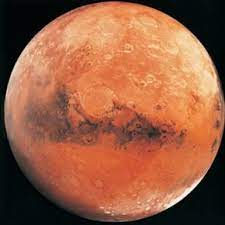

Mars

Mars Had Water In The Ancient Past.
Mars Used To Have A Thicker Atmosphere.
In The Early Space Age, We Thought Mars Was Like The Moon.
We Have Pieces Of Mars On Earth.
Mars Has Some Extreme Highs And Lows In Terrain.
Back to Index